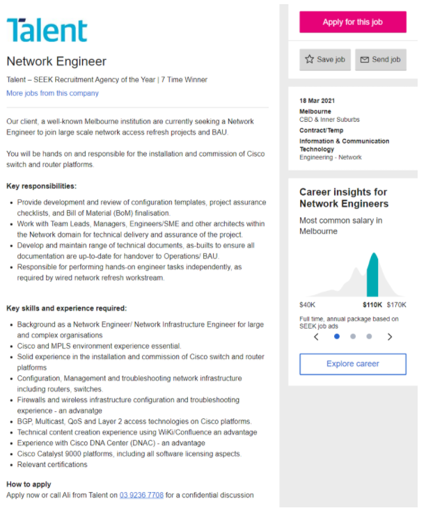
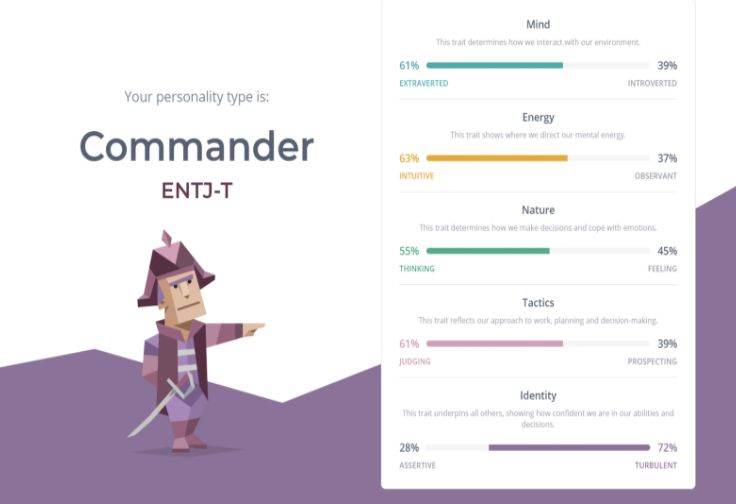
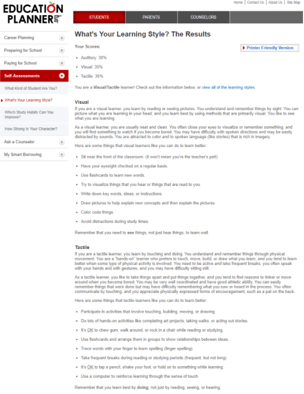
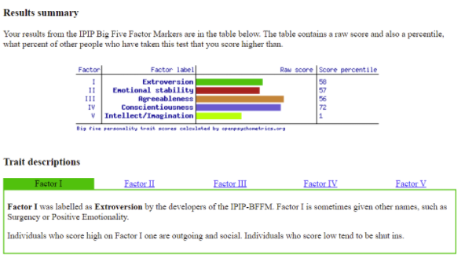

My Profile
Joshua Lam
Personal Information
Student number: s3902169
Student email: s3902169@student.rmit.edu.au
Background Information
Nationality: Born and raised in Australia.
Ethnicity: Half Vietnamese, Half Timorese. My mother was born in East-Timor, whereas my father was born in Vietnam.
Education to date: Completed VCE Year 12, graduated with a 72.3 ATAR. Currently studying my first year of Bachelor of IT at RMIT.
Languages Spoken: Hakka, Vietnamese, English
Hobbies:
Interest in IT
What is your interest in IT? When did your interest in IT start?
My interest in IT started when I was very young, around the age of ten. I have grown up with computers my whole life, using a ThinkPad as my gaming station, and progressing through different laptops then eventually to gaming PCs. I have noticed throughout my years that everytime my electronic devices had a problem I enjoyed taking the time to accurately locate and fix the problem, this was a particular interest of mine that was like no other. I also helped many friends and family dissolve problems they encountered which also brought me to realise my interest in Information Technology.
Was there a particular event or person that sparked your interest? Outline your IT experience (if any).
The one person that majorly sparked my interest in IT was my cousin. He achieved a 98 ATAR, and graduated with a bachelor's degree in Computer Science at RMIT. Ever since I was young, I always looked up to him as a role model. At the choosing of my courses, I asked him for advice on doing IT or Computer Science as a career path. After interviewing him about his career, such as questions relating to what qualities you will need, what difficulties you will face, his answers changed my whole career path from originally wanting to do a Bachelors of Applied Logistics and Supply-chain management to IT. I would have loved to do Computer Science, however I did not do methods and there was no pathway to enter a computer science degree, so IT ended up being my top choice - and alot of computer-science related jobs also accept a Bachelors of IT as it’s qualification.
Why did you choose to come to RMIT?
I chose to attend RMIT for its robust availability of facilities and equipment, as well as it’s experienced staff members that will help me during my completion of this course. It was also in a more convenient location to access as opposed to other universities like Monash, where I got offered a Bachelor of IT there as well in the Clayton campus. However as I am from the Northern suburbs, I figured the travel wasn’t worth it and RMIT had many vouches and recommendations as a top-tier university.
What do you expect to learn during your studies?
I expect to learn many qualities and skills obviously relating to IT, such as Programming, Networking, Data communication, Linux, Java, and HTML. I wish to relay these skills in finding a career relating to IT, as it will benefit me greatly. As IT is a generally new subject to me, building these skills and further developing them throughout the course are of great interest to me.
Ideal Job
Job Snapshot
Job Advertisements
Network Engineering - Talent
Network Engineering - leidos
Network Engineering - nqiT
My ideal job would be a network engineer. A network engineer is responsible for the planning, development and implementation of computer network and system services, as well as troubleshooting problems relating to them.
What makes this job appealing to me is the troubleshooting of problems relating to its network system services, as I relatively find fixing problems very interesting and satisfying ever since a young age.
The skills, qualifications and experience required for this job are:
Skills
Experience
Qualifications
The skills, qualifications and experience I currently possess:
Skills
Experience
Qualifications
How will you plan to obtain these skills?
The plan to obtain these skills have been sketched and aided through the course plan of the Bachelors of IT degree. Advanced/minor IT options such as Further programming, Network programming, Security testing and minor study streams (such as CISCO Systems Minor which includes Networking/Advanced Networking) will greatly help in obtaining these skills required to efficiently and effectively become a network engineer. To further develop skills such as communication and working in a group, I am planning to find entry-level IT jobs such as Help Desks and Supports in Year Two of my program (as I will have deeper knowledge of IT than I have currently) in different companies to get familiar with an IT environment and to further refine my current abilities. However, this is still a plan and may still chansge as I progress through my course and find something more interesting/befitting.
Personal Profile
Myer Briggs Test
https://www.16personalities.com/free-personality-test Online Learning Style Test - Education Planner
http://www.educationplanner.org/students/self-assessments/learning-styles-quiz.shtml Big Five Personaltiy Test
https://openpsychometrics.org/tests/IPIP-BFFM/ I find the results of these tests very interesting, as they provide meaningful, honest results to reveal what type of personality one has, as one person may have thought they were an extrovert but is an actual introvert at heart. The results of tests such as the online learning style test is also very beneficial, as everyone’s learning style is unique and different. These websites help to accommodate for that and further benefit students such as myself in their studies. At heart though, I do not 100% believe the accuracy of these tests as everyone is different, and the studies to accommodate for every person in the world would be highly difficult.
How do you think these results may influence your behaviour in a team?
As a mostly individual learner myself, these results can actually prove to be beneficial in a team environment to see if there are any outstanding problems with myself as a team worker that my team may be too afraid to address. It will help increase productivity within the team and help achieve our goals much easier, if everyone understands each other well and personalities don’t collide.
How should you take this into account when forming a team?
If you were to fully follow a personality test to form a team, I believe it wouldn’t be very effective and successful, however it can be used as a basis to outline what type of learner and personality each of your team members have to further your understanding and synergy with them. Being a ‘commander’ personality myself, it demonstrates I should show leadership within my team, however if there is another ‘commander’ we may collide or have conflicting ideas.
Project Idea
OverviewMy project idea is a Covid-19 Check-in app, where users will be able to scan QR/enter access codes to check in a particular place by using the mobile’s location, time, contact and name. Businesses will need to register their name with the tracking app in order to generate a QR/access code for users to check in, and it will be as simple as entering a form that will be able to save the users’ details for further use. The app will be able to track when, who and where signed into a place in order to help track-down any potential covid-19 cases.
Motivation
The idea of this project came from when restaurants/businesses started re-opening after lockdown and used pen and paper to track individuals. I thought it would be a great idea to create an application that gives the user’s time, location and contact details at the click of a button or scanning of a QR code to aid with contact tracing and to keep individuals safe. Not long ago, Service Victoria created a check-in app that is very similar to my project idea.
Description
Tools and Technologies
I will require mobile development tools such as;
The hardware I need will be:
Skills required
The skills that are required for this application are;
Organisational and time-management skills
Outcome
If this project is successful, it can help many businesses and governments to contact-trace individuals that may have been in contact with a covid-19 case. With the simplicity of the app, it will be very easy to scan and check in locations without needing to write down on pen & paper. Though the development of this application is very similar to the Services Victoria check-in app, there are still many businesses out there that have not registered with Services Victoria.
Any potential drawbacks?
The potential drawbacks in creating this project would be;